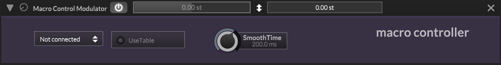

Macro Control Modulator

A modulator controlled by one of HISE's 8 macro controller slots, allowing real-time automation and MIDI learn functionality. The macro value (0-1) is optionally shaped through a lookup table for custom response curves, then passed through a smoother to prevent zipper noise during fast value changes.
The macro slot value arrives via the macro control system, not via the audio signal path. The table lookup is applied before smoothing, so the smoother operates on the post-table value. When smoothing is active, the output is calculated per-sample at the control rate; otherwise the buffer is filled with a constant value.
Signal Path
Parameters
| Parameter | Description | Range | Default |
|---|---|---|---|
| MacroIndex | The macro controller slot to link to. Set to -1 for unconnected. | -1 - 7 | -1 |
| SmoothTime | Smoothing time for value transitions. Operates at the control rate (sampleRate / downsampling factor). | 0 - 1000 ms | 200 ms |
| UseTable | Enables a lookup table for custom macro value response curves. The table is applied before smoothing. | On / Off | Off |
| MacroValue | The current macro value. Write-only - driven by the macro system. getAttribute() returns a hardcoded 1.0. |
0.0 - 1.0 | 1.0 |
Notes
The MacroValue parameter is a write-only parameter driven by the macro system. Calling getAttribute() on it returns a hardcoded 1.0 with a jassertfalse - it is not intended to be read back.
The smoothing operates at the control rate, which is sampleRate / HISE_CONTROL_RATE_DOWNSAMPLING_FACTOR (8x downsampling for instruments, 1x for effects). When SmoothTime is 0, the smoother is bypassed and the output buffer is filled with a single constant value per block.